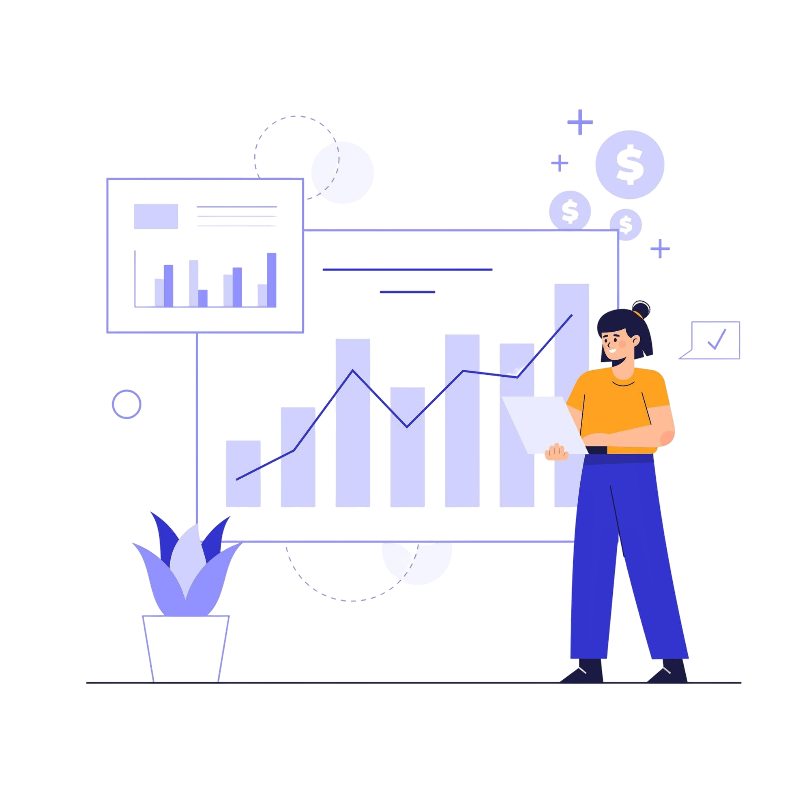
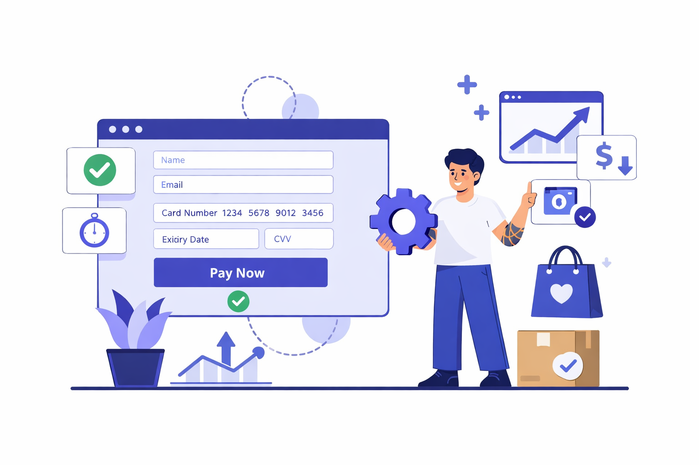
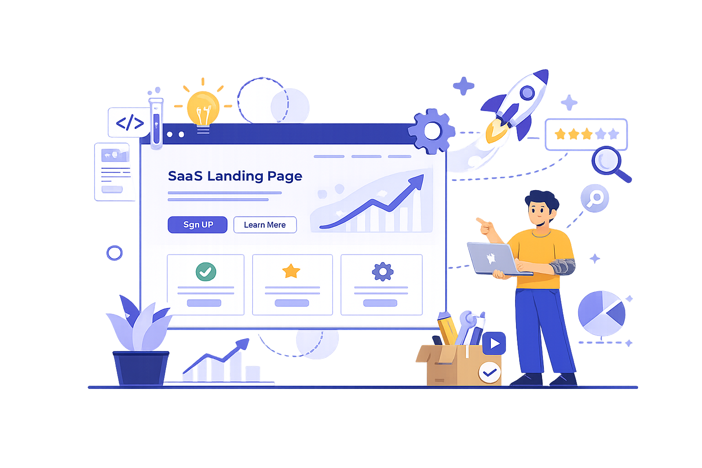
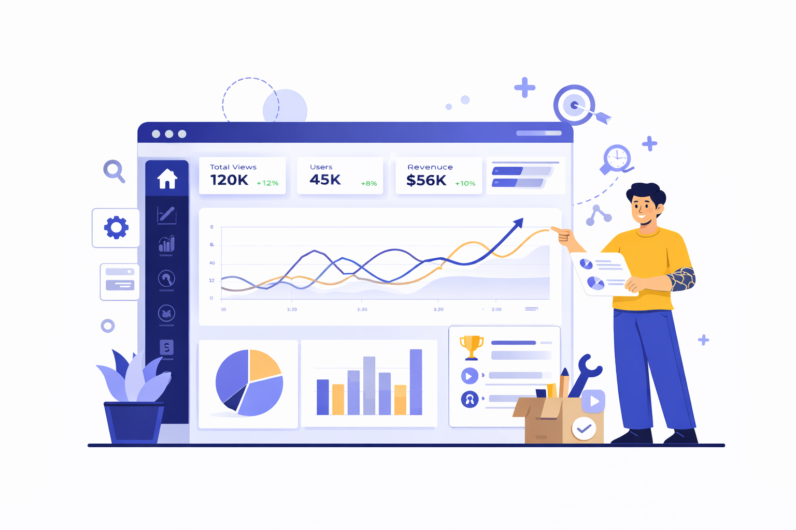

Soy Axel El Hilon, diseñador UX/UI enfocado en optimizar productos digitales, landing pages y ecommerce para mejorar resultados de negocio.

Diseño experiencias digitales enfocadas en mejorar usabilidad, conversión y resultados de negocio.
Investigación de usuarios, análisis de comportamiento y detección de fricciones para mejorar la experiencia.
Diseño de interfaces modernas, accesibles y consistentes que mejoran la claridad y la interacción.
Mejora de landing pages y flujos digitales para aumentar registros, ventas o acciones clave.
Algunos proyectos donde trabajé en mejorar experiencia de usuario, usabilidad y conversión en productos digitales.

Rediseño del flujo de checkout para reducir fricción y mejorar la conversión en ecommerce.
Ver caso de estudio →
Diseño de landing page orientada a aumentar registros mediante mejoras en jerarquía visual y claridad.
Ver caso de estudio →
Diseño de interfaz para visualizar métricas de negocio con foco en claridad y eficiencia de uso.
Ver caso de estudio →Soy Axel El Hilon, diseñador UX/UI enfocado en crear productos digitales que no solo se vean bien, sino que también funcionen mejor para los usuarios y para el negocio.
Me interesa especialmente la optimización de conversión, la mejora de flujos de usuario y el diseño de interfaces claras que reduzcan fricción en la experiencia.
Actualmente me especializo en diseño de landing pages, ecommerce y productos digitales enfocados en resultados.
Si estás construyendo un producto digital o necesitas mejorar la experiencia de tu plataforma, podemos conversar.
Disponible para proyectos freelance y colaboraciones.